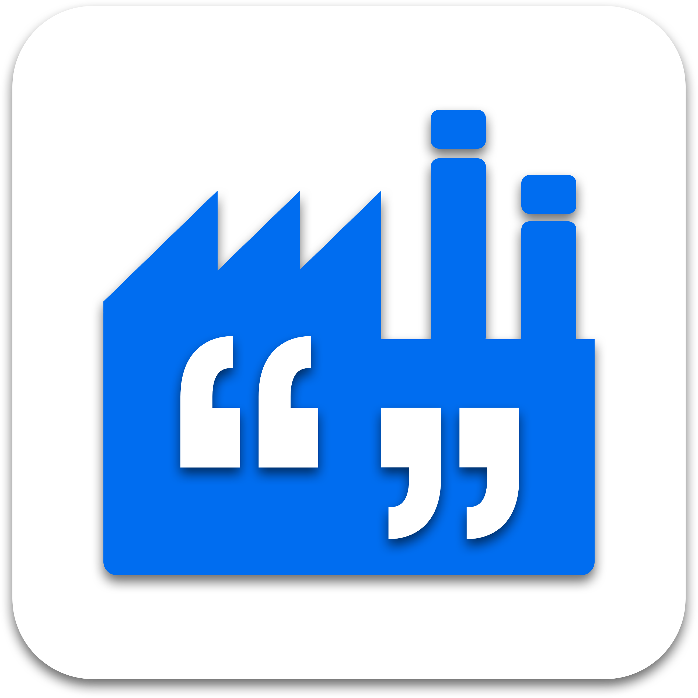

<!-- <div *ngIf="showSplash" class="splash">
    
</div> -->

 

<!--   
<ion-menu [content]="nav">

    <ion-header>
        <div style="background-image:'../assets/icon/icon.png' ;width: 100%;height: 125px;"> 
        </div>
    </ion-header>
    <ion-content>
        <ion-list no-lines>
            <button ion-item (click)="onLeftSideMenuClick(rootPage)" menuToggle>
                <ion-icon name="quote" item-left></ion-icon>
                Quotes
            </button> <button ion-item (click)="onLeftSideMenuClick(settingsPage)" menuToggle>
                <ion-icon name="settings" item-left></ion-icon>
                Settings
            </button>
        </ion-list>
    </ion-content>


</ion-menu> -->

<ion-nav [root]="rootPage" [class]="selectedTheme" #nav swipeBackEnabled="false"></ion-nav>